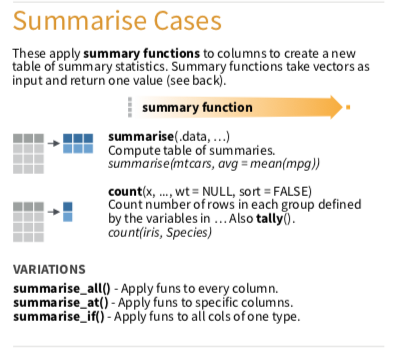
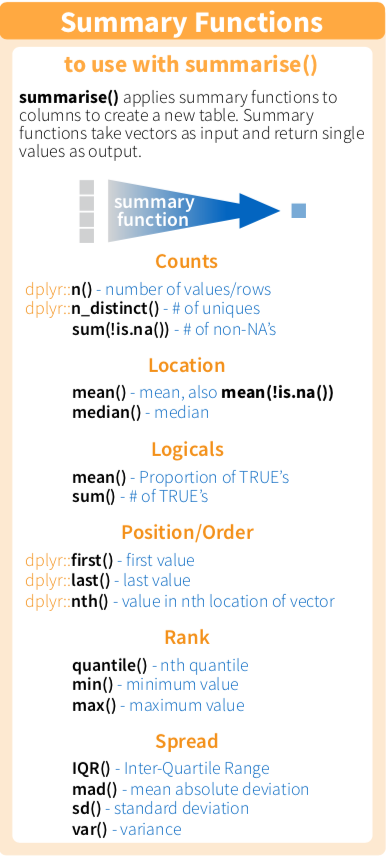

Chapter 3 敘述統計量Summarise()


Summary functions take
vectors as input and return one value，意思就是他會精煉出一個值，可能是某一個變數的平均數等。
介紹兩種用法，summarise/summarise_at
- summarise
> 記得要幫你的
summarise後的結果，取一個變數名稱。這邊是avg_dep_delay。
flights %>% summarise(avg_dep_delay = mean(dep_delay), dep_delay_sd = sd(dep_delay))## # A tibble: 1 x 2
## avg_dep_delay dep_delay_sd
## <dbl> <dbl>
## 1 NA NA#為什麼na.rm沒有加上會變成NA?
#na.rm本身是什麼意思？
flights %>% summarise(dep_delay_mean = mean(dep_delay, na.rm = T),
arr_delay_mean = mean(arr_delay, na.rm = T),
dep_delay_sd = sd(dep_delay, na.rm = T),
arr_delay_sd = sd(arr_delay, na.rm = T))## # A tibble: 1 x 4
## dep_delay_mean arr_delay_mean dep_delay_sd
## <dbl> <dbl> <dbl>
## 1 12.6 6.90 40.2
## # ... with 1 more variable: arr_delay_sd <dbl>summarise_at意思就是指定幾個變數進行summarise，如果遇到很多個變數的話，會比較方便。
#vars，本身是variables的意思，就是要挑哪幾個變數
#funs，本身是functions的意思，就是要執行哪些summary function
flights %>% summarise_at(vars(dep_delay, arr_delay), funs(mean,sd), na.rm = T)## # A tibble: 1 x 4
## dep_delay_mean arr_delay_mean dep_delay_sd
## <dbl> <dbl> <dbl>
## 1 12.6 6.90 40.2
## # ... with 1 more variable: arr_delay_sd <dbl>- 上面兩者的結果一樣嗎？
範例
若完成，請直接貼到open chat
- 若你是一位賣車的菜鳥業務，為了要知道各車款的優劣勢，想先了解一下這些車，平均有多少汽缸數（cyl, cylinders)，平均有幾匹馬力(hp, Gross horsepower)，你會怎麼做？
mtcars自主練習
請問NBA 2017-2018球季，
- 全體球員平均上場場次為幾場？標準差多少？(上場場次，變數為GamePlayed)